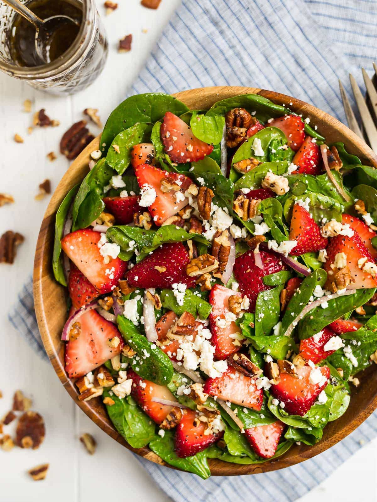

Spinach Strawberry Salad

Say hello to COLOR, Spinach Strawberry Salad with Balsamic Poppy Seed Dressing style!
Whether you need a healthy lunch or are looking for a salad to bring to a party
that—this is critical—people actually want to eat, this strawberry spinach salad with
poppy seed dressing and feta is the recipe for you!
Ingredients
For the Strawberry Spinach Salad:
- ¾ cup raw pecans
- ½ small red onion very thinly sliced
- 10 ounces fresh baby spinach
- 1 quart strawberries
- ¾ cup crumbled feta cheese
For the Poppy seed Dressing:
- ¼ cup balsamic vinegar
- 3 tablespoons extra-virgin olive oil
- 1 ½ tablespoons poppy seeds
- 1 ½ tablespoons honey
- ½ teaspoon Dijon mustard
- ½ teaspoon kosher salt
- ⅛ teaspoon ground black pepper
Home